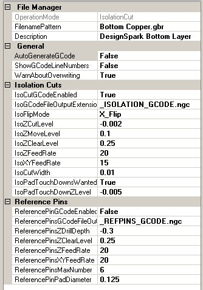

Line Grinder
Gerber Plot to Isolation Milling GCode Software
Isolation Cut File Managers

The Line Grinder Isolation Cut File Manager
What Do Isolation Cut File Managers Do
Isolation Cut File Managers produce the GCode which cuts the copper of the PCB around the traces and pads thus electrically isolating them from the other components on the board. Isolation GCode is created from the Gerber file contents by associating a File Manager with an OperationMode of type Isolation_Cut with the file. The association is performed by setting the FileNamePattern field of the File Manager to all or part of the Gerber files name.
Isolation_Cut file managers can also produce Reference Pin GCode - if required.
The configuration items for Isolation_Cut File Managers are:
General Category
- OperationMode
- This value determines the type of GCode the File Manager will create from the GCode file it processes. This value is set when the File Manager is created and cannot be changed.
- FilenamePattern
- A part of a Gerber file name. When the Gerber file is opened, the list of File Managers will be searched and the first File Manager found which has a FilenamePattern value contained within the name of the Gerber file will be used to process that file. The standard wild cards of * and % should not be used.
- Description
- A user-defined configuration item that can be used as brief documentation to describe the purpose of the File Manager.
File Manager Category
- AutoGenerateGCode
- If enabled, the GCode file can be automatically generated when the file is opened. If this value is False then the GCode must be generated after the file is opened by pressing the Convert to GCode button found on the main form.
- ShowGCodeLineNumbers
- If enabled, old style line numbers will be placed in the GCode file. This option is offered for completeness since line numbers in the GCode file almost never necessary or wanted.
- WarnAboutOverwriting
- Normally the Line Grinder will issue an warning message if the GCode file you are about to save already exists. This warning can be disabled by setting this option to False.
Isolation Cuts Category
- IsoCutGCodeEnabled
- If this value is set to True then the GCode which isolates the traces by creating isolation cuts around them will be generated when the Generate GCode button on the main form is pressed.
- IsolationGCodeFileOutputExtension
- When the generated Isolation Cut GCode file is saved, the existing filename extension will be removed and this value substituted in its place.
- IsoFlipMode
- Gerber plots are always generated as viewed "from the top". This means that if the isolation cuts are to be engraved on the underside of a double sided PCB then the board must be flipped along either the X or Y axis. If the IsoFlipMode is Flip_X then any Y coordinates remain constant and the X coordinates are adjusted so as to mirror image the board. The reverse is true if the IsoFlipMode is Flip_Y. The issue of registration so that the pads of the top and bottom isolation cuts are properly aligned is handled by the use of Reference Pins.
- IsoZCutLevel
- This is the depth, in application units, to which the toolhead will be driven in the PCB material in order to engrave the isolation cut paths. This value should be negative (zero is traditionally the surface of the PCB) and should be a very small value - since it is only necessary to cut a small distance into the PCB in order to electrically isolate the two parts. Note that the engraving bit is usually conical. This has profound implications in terms of the width of the line being cut. Deeper cuts mean a wider line when a conical bit is used. See the IsoZCutLevel discussion on the What Can Go Wrong help page for more information on this topic.
- IsoZMoveLevel
- This is the height above the PCB at which the toolhead moves about as it hops about from cut to cut. It should be positive because it is above the surface of the PCB but not so high as to consume large amounts of time getting into position.
- IsoZClearLevel
- This is the height above the PCB at which the toolhead moves quickly in order to get into position. It should be positive because it is above the surface of the PCB and high enough to clear all hold downs and other clamping material.
- IsoZFeedRate
- This is the speed (in Application Units per minute) at which the toolhead will drive the milling bit into the PCB.
- IsoXYFeedRate
- This is the speed (in Application Units per minute) at which the toolhead moves along when cutting the isolation cuts on the PCB. If this is too fast a poor cut will be made. If it is too slow then the isolation milling operations will take longer than necessary.
- IsoCutWidth
- This is a very important parameter which determines the visible width on the Plot View of all isolation cuts. The reason why this is such a very important parameter is because it determines the width of the isolation tracks on the PCB. The Line Grinders Gerber to GCode conversion algorithm pays very close attention to the IsoCutWidth value and cannot and will not attempt to run an isolation cut line between two objects separated by less than that distance. You should review the discussion on the What Can Go Wrong help page concerning this parameter and the effects of setting it too large or too small.
- IsoPadTouchDownsWanted
- Pad touch downs are small indents set into the center of the pads by the milling bit as it cuts the Isolation GCode. These are very useful as "drill hole centers". The milling bit is usually much more rigid than the small drilling bits used to drill out the holes on the PCB. If these holes are present, the drilling bit has a much easier time of setting itself in the exact center of the pad and, if manually drilling, you are much less likely to break a small drill bit. If this value is set to True then the isolation cut GCode will also contain code to touch the milling bit to the center of each pad.
- IsoPadTouchDownZLevel
- This is the depth, in Application Units, to which the toolhead will send the milling bit when performing pad touchdown operations. This value should be negative (zero is traditionally the surface of the PCB) and should be a very small value - since it is only necessary to cut a small distance into the PCB in order to make an indent in the surface.
Reference Pins Category
- ReferencePinGCodeEnabled
- If set to True then the GCode which drills the Reference Pin holes will be generated when the Convert to GCode button on the main form is pressed. This option is normally only enabled for File Managers which process the "Top Copper" layers, since only one Reference Pin GCode file is needed per PCB.
- ReferencePinGCodeFileOutputExtension
- When the generated Reference Pin GCode file is saved, the existing filename extension will be removed and this value substituted in its place.
- ReferencePinsDrillingZDepth
- This is the depth, in Application Units, to which the toolhead will be driven through the PCB material in order to create the holes for the Reference Pins. This value should be negative (zero is traditionally the surface of the PCB) and should be a value deep enough to physically hold the reference pins (old milling bits are usually used for this purpose) firmly when the PCB is turned over to begin isolation cuts on the other side. Obviously you are not going to want to be drilling into the bed of your mill, so the PCB is usually mounted on a "throw-away" piece of wood.
- ReferencePinsZClearLevel
- This is the height above the PCB at which the toolhead moves quickly in order to get into position. It should be positive because it is above the surface of the PCB and high enough to clear all hold downs and other clamping material.
- ReferencePinsZFeedRate
- This is the speed (in Application Units per minute) at which the toolhead will drive the drilling bit into the PCB.
- ReferencePinXYFeedRate
- This is the speed (in Application Units per minute) at which the toolhead moves about when moving from position to position. If it is too slow then the Reference Pin drilling operations will take longer than necessary.
- ReferencePinsMaxNumber
- This is just a check value (normally set to 6) which counts the number of defined Reference Pin pads on the PCB. Because the Reference Pin pads are detected by looking for pads of a user defined size it is useful to have a test to see if there are more than expected.
- ReferencePinPadDiameter
- This is the diameter of the Reference Pin Pads which you have created on the PCB. This diameter is used to find the Reference Pin pads. Only Reference Pin pads should be this diameter. There are several other criteria required in order to successfully create Reference Pins. You should review the Reference Pins section of the What you Need To Know help page for more information.